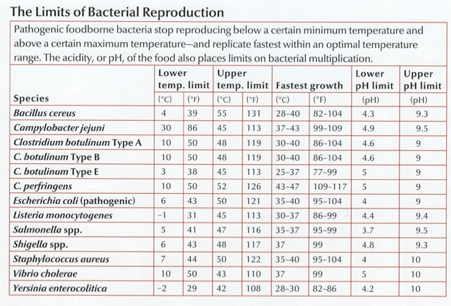
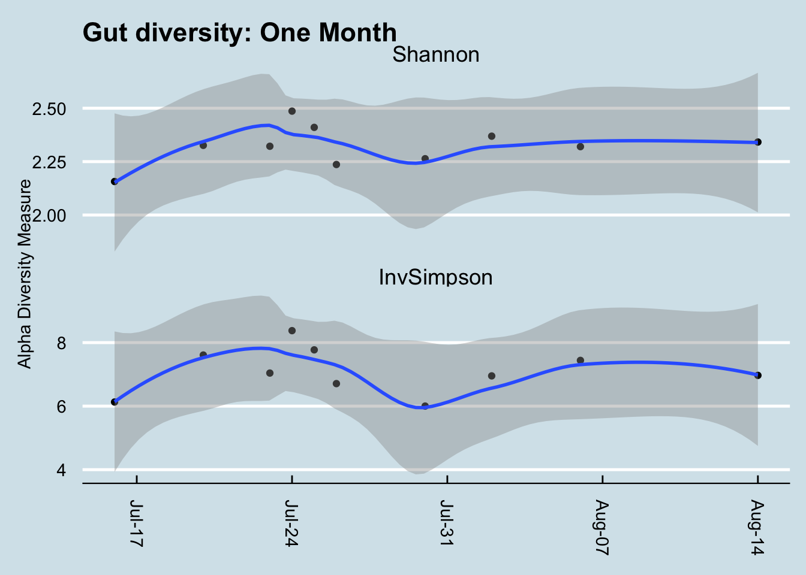

6 Microbes In You
6.1 Microbes and health
The great French scientist Louis Pasteur, working as a physician in the 1800s, was the first to popularize the idea that the world is covered in germs, invisible agents that he associated with food spoilage and disease. Simple steps at hygiene (the word derives from a Greek phrase meaning “healthful art”) could make conditions inhospitable for them, he discovered, enabling better food storage and dramatically fewer illnesses. Working as a chemistry professor in the 1850s, one of his students, the son of a local wine manufacturer, sought his help to solve problems with souring. Subsequent investigations led him to conclude that invisible yeasts were the culprit, and that exposure to air could affect the rate of fermentation. Pasteur’s emphasis on controlling these microbes led to a general association of germs as pathogens, a bad, even evil force that we must destroy, every single time. The only good germ is a dead germ.
And for good reason. The development of effective disinfectants, and then antibiotics – germ killers – was one of the greatest medical achievements of all time, saving the lives of a significant fraction of the human race. Before Pasteur, urban life was a precarious game of chance against diseases that seemed to come and go randomly. Thanks to the development of the Germ Theory of Disease, it was suddenly possible to imagine a world where deadly illnesses and infections could be controlled and perhaps eliminated. Now, every day of your life, modern amenities like running water and flush toilets keep you healthy simply by controlling the growth of microbes.
Some can be quite nasty. The bacterium that causes Cholera, Vibrio cholerae, after infecting the small intestine, promptly hijacks the body’s natural defense systems into sending a large stream of water through the colon to flush out all other bacteria. Normally, this would be an appropriate response to an invasion, but by hiding before the colon, Vibrio cholerae continues to breed above the main flow of water. The resulting diarrhea is so fierce that the patient is literally unable to drink enough to make up for the outflow, and dies of dehydration within days. And in a final act of cruelty, that water that the body pushes out so fiercely is itself full of V. cholerae, who use the opportunity to infect others who come in contact with the water.
Bacterial gastroenteritis – more commonly known as “food poisoning” – is a source of discomfort, abdominal pain, diarrhea, and worse for about 1.5 million Americans each year. Most of the time, it can be traced to Campylobacter jejuni, which has a shape and structure ideally suited to penetrating the mucosal layer of your intestines, where it attaches itself and begins to release toxins that activate the immune system and the resulting diarrhea and fever. C. jejuni is a natural and benign colonizer of the digestive tracts of many bird species, including poultry, and because most of the time these birds appear perfectly healthy, it’s not uncommon for 20% or more of retail chickens to be contaminated. Fewer than 1,000 organisms under the right conditions can cause illness.
Fortunately, C. jejuni is easy to kill. Low pH, for example: 2.3 and they’re dead (think lemon juice or vinegar). The antibiotic erythromycin is quite effective too, with almost no resistance observed so far. But the best weapon is heat: they strongly prefer the normal body temperature of birds (40\(^\circ\) C or 105\(^\circ\)F ), and reproduce best at 42\(^\circ\) (107.5\(^\circ\)F ). Go much higher than that and they’ll slow down and die.
The toxins produced by the Clostridium genus are among the most dangerous. Botulism (C. Botulinin) Tetanus ( C. tetani), gangrene (C. perfringens), and of course C. Dificile.
Some bacteria simply use the darkness and wet warmth of the colon as a breeding ground, happily feasting on the materials they find there. They cause trouble not by what they eat, but by what they excrete: nasty toxins that mess up some other part of the body. Clostridium botulinum produces the neurotoxic protein botulinum that can weaken or freeze nerve cells. The most acutely lethal toxin known – only 2 billionths of a gram can kill – botulinum is almost as deadly to people as the plutonium in a nuclear bomb. Just a few pounds under the right conditions would kill everyone on earth.
Part of what makes pathogens so dangerous is it takes so few of them to be deadly. Some Shigella species, for example, become infectious with a starter colony of as few as ten organisms.1
With such terrible killers lurking out there, it’s tempting to divide all microbes into “bad” (pathogenic), “good” (probiotic) and “neutral” (commensal). You’ll find plenty of lists that do just that.
But often, perhaps usually, the distinction between good and bad is unclear. Consider the “viridans” Streptococci, a group name for a whole breed of related microbes commonly found harmlessly in human mouths. If a few of these escape the mouth and somehow enter the bloodstream, they can land on a heart valve and can cause a dangerous, life-threatening infection. But inside the mouth they are tough competitors to other bacteria that may want a foothold, like the Streptococcus that causes Strep Throat. Mix Viridans with Strep A, and Viridans wins every time. So is it good or bad? Well, it’s bad if your Viridans makes it to the heart; but in its regular form it protects you from other infections.2
People with Streptococcus lugdunensis in their noses appear protected from some staph infections, probably because S. Lugdunensis produces a microbial antibiotic to kill off its competitors. But S. lugdunensis can itself cause skin infections.
Often it’s the context that matters. Staphylococcus aureus, found in about a quarter of all Americans, is the agent behind a host of infections ranging from mild skin ailments to the deadly, often untreatable MRSA. But it seems to be harmless when in the presence of Corynebacterium species. 3
Fortunately, the body is pretty good at fighting off many pathogens. Around 94% of people who ingest Salmonella will recover without any medical attention at all.4 Sometimes the fight against bad bugs is helped by other bugs: Lactobacillus for example is especially good at crowding out pathogens.
6.2 Food Allergies
If you attended elementary school before the 1980s, you can remember a time before nut allergies, when school lunches served peanut butter to everyone without the slightest worry that it might cause problems. Now many schools are forced to strictly limit the allowable kinds of food in their cafeterias, even from kids who bring their own lunches. Besides nuts, people suffer from allergies to milk, corn, eggs, fish, shellfish, soy, wheat, and many others.
Oddly, the very existence of food allergies appears to be an entirely modern problem. Medical journals didn’t even mention food allergies until 1969, and examples were extremely rare before that. In fact, the very first mention of a food allergy happened about 100 years ago.5. Human genetics hasn’t changed suddenly in the past half-century, and given the variety of conditions, it seems unlikely that we can blame it on a single toxin or industrial pollutant.
Several intriguing clues point in the direction of microbes as the cause of allergies. One theory, known as the “hygiene hypothesis”, says that our modern environments are too sterile, that the immune systems of growing children need to be challenged by threatening invaders from time to time or they become overly sensitive. Now another idea, the “old friends” hypothesis suggests that it’s not the hygienic conditions and lack of microbes per se that drive the autoimmune response, but rather it’s that our bodies have evolved, over untold generations, to expect microbes in the environment, some nasty and some friendly, and when the developing immune system of a child is never exposed to these microbes, a breakdown occurs that misrecognizes certain foods as enemies instead.
Rutgers University scientist Martin Blaser (Blaser 2015) thinks something odd has happened because of the overuse of antibiotics. There are plenty of people in Western societies who suffer far fewer food allergies, people like the Old Order Amish of Pennsylvania, who for centuries have kept to traditional ways of farming and who live in communities largely unaffected by industrialization. Their significantly greater time spent outdoors, challenged regularly by animal and soil microbial pathogens has made them far less likely to suffer from allergies than the rest of the population. Studies of Amish gut microbiomes show strikingly different profiles, generally with higher diversity and numerous microbes rarely found in urban people6.
Asthma, another terrible condition likely sparked by an incorrect balance between hygiene and microbes, points to better times ahead, its numbers of sufferers having peaked in the 1990s and 2000s. In fact, “We have probably seen the worst of the asthma epidemic”7 writes scientist Tim Spector, who suggests childhood asthma has been replaced by food allergies.
The good news is that, armed with our understanding of the relationship between microbes and allergies, new discoveries may offer treatments or even cures.
Evidence showing that Clostridia may counter sensitivity to peanuts 8 has led to additional research behind the source of the problem. Now a new drug, Palforzia, is an FDA-approved treatment option for peanut allegies that works by exposing young children to small doses of the key microbe-stimulating compound in peanuts, letting immature immune systems develop a safer relationship with peanuts. Similar studies are underway for other allergies, lending hope that someday food allergies may once again fade into the background and disappear as they did 100 years ago.
Cathryn Nagler’s lab has identified Anaerostipes caccae as a key microbe that protects against allergic reactions.9
6.3 Gluten
It’s been well-established that a gluten free diet impacts the microbiome. This shouldn’t be too surprising, given that gluten is a nutrient for some bacteria but not others. But what about people who show an unusual sensitivity, even allergy, to gluten? What’s the cause?
Recently the idea of a gluten free diet has taken on fad diet status. Despite surprisingly little research evidence that it can quantitatively affect health, millions of people swear that gluten gives them various ailments from poor digestion to brain fog. If you don’t believe it, they’ll say, try it yourself and see; and sure enough, many of those who go off gluten claim big health benefits. Eating is usually a zero-sum game: stop eating one thing (say, the gluten in wheat) and you’ll end up eating more of something else (rice or corn). Is it the switch to a different diet — and the anticipation of success that this brings — that makes people feel better, or is there something really significant about gluten itself?
The experts say no, with one important exception. A tiny fraction of people do suffer from Celiac disease, a known disorder of the body’s ability to handle gluten. There are well-established tests that can definitely tell whether you have Celiac disease or not, and although the vast majority of people test negative, those who are true Celiacs will immediately and obviously benefit from a gluten free diet. But what’s driving the difference?
As usual, the genetic evidence isn’t completely lock-tight. Although a third of the population have particular versions of the (DQ2 or DQ8) of a cellular receptor called the human leukocyte antigen (HLA), only a tiny minority go on to develop serious gluten sensitivities. Some studies indicate gluten sensitivity arises at an early age, and that perhaps celiac disease can be prevented by exposing babies to gluten at just the right moment, but other studies say the opposite.10
These are all clues that the microbiome may be involved, and sure enough, many studies show a definite difference between healthy microbiomes and those with clinically-proven Celiac disease.11 But because Celiac sufferers tend to eat differently than non-sufferers, it can be hard to tell how much of the microbiome is a result of a different diet, and how much is due to the disorder.
Another clue happens further up the digestive system. Spanish researchers looking at the small intestine found curiously similar microbiomes in both healthy and celiac patients. 12. The difference happened at the functional level of what those bacteria do, and not necessarily in just whether the microbe is present or absent. Lactobacillus, it turns out, is one of the best degraders of gluten13, but there are others: Bacillus pumilus, Stenotrophomonas maltophilia, Pseudomonas aeruginosa. Most interestingly, unlike Lactobacillus, some of these bacteria can do more than just digest the gluten: they appear to contain enzymes that transform the gluten — pointing to the possibility that the enzymes produced by these microbes could be purified and used to eliminate traces of gluten from food products.
So if Celiac disease is caused by a change in the way some microbes function, how did that change happen in the first place? One theory is that it’s a virus. Researchers at the University of Chicago and University of Pittsburgh were able to supercharge the way mice react to gluten by infecting them with a reovirus that apparently changes something about the body’s immune response in the presence of the gluten protein. 14
Members of your household will have more similar microbiomes if there’s a dog present.15
Humans are able to synthesize just 30 plant-digesting enzymes. Contrast that to the species Bacteroidetes thetaiotaomicron which can break down plant structures using over 260 different enzymes.16
6.4 Obesity
Obese and diabetic people are subject to more infections than healthy people, but interestingly it’s not the body mass index that drives this, but rather the accompanying hyperglycemia.17
6.5 Other conditions
Some people claim you can treat migraine headaches, sinusitus, and other conditions by inserting Lactobacillus-containing Kimchi up the nostril. I’ve not tried it and can’t vouch for it, but let me know if it works for you.
6.6 Diversity and health
Most microbiome discussions begin with the assumption that diversity is good. Virtually any popular book or article about how to improve your health will suggest ways to increase diversity, usually by eating specific foods. For what it’s worth, a study of more than 10,000 gut microbiomes found only one sure-fire association with higher gut diversity: people who self-report eating more plants have higher diversity than those who eat fewer types of plants, and this is true no matter their diet type (omnivore, vegan).18
The intuition is easy to understand: if your body harbors a wide variety of microbes, you’ll have a deeper catalog of useful ones that can be applied to new situations. The world around us is constantly changing, and you never know what new threats or opportunities you may encounter. You can respond better if you have an abundant variety of organisms that can meet any challenge.
In practice, diversity is difficult to pin down quantitatively. We know what we mean in principle: having a variety of different microbes seems good, but clearly there are limits. You wouldn’t want “variety” to include serious pathogens, for example. We know intuitively that a deciduous forest at sea level, with dozens of differerent tree species, is more diverse than one at a high altitude tree line. But is the one at low altitudes “better”? It depends on where you live!
A similar problem has long confronted ecologists, who have developed several diversity measures that have been adapted to the micro world:
Alpha diversity: the variance within a particular sample. Usually measured as a single number from 0 (no diversity) to infinity, or sometimes as a percentile, this is what most of us mean when we look at our microbiome results and ask about diversity.
Beta diversity: how samples vary against each other. Many scientific studies are interested in the differences between sites on the body, or microbiomes across geographic locations. Beta diversity is typically the thinking behind “clustering” algorithms that try to show differences or similarities among samples.
All diversity metrics take into account two aspects of a community: the number of different organisms in a sample, and the range of abundances for each one. To understand how this works, think of two forests, each with an equal number of trees. (Table 6.1)
| Forest | Number of Trees | Number of Species | Diversity |
|---|---|---|---|
| A | 1000 | 1 | Low |
| B | 1000 | 1000 | High |
| C | 10 | 10 | ? |
Clearly, Forest B with its abundance of species and trees is the most diverse. But what about Forest A compared to Forest C?
On the one hand, Forest C seems to have a greater variety of trees: 10 times more than Forest A. But it also has many fewer of them. In other words, there are two aspects of diversity that matter: the absolute number of organisms in an ecosystems, and the variety or richness of those that are there.
Whether A is “better” or “worse” than C depends on subjective, non-quantifiable factors that are not included in any diversity metric. A managed forest, such as one on a Christmas tree farm, might be perfectly healthy for one purpose (growing Christmas trees for sale), while an adjacent clear-cut forest with ten lonely and scraggly trees could be far less healthy, even if it has more of a variety of trees.
In this example, we use the distinction richness to refer to Forests B, or C, with their greater variety of species, and the overall term diversity tries to be a measure of both richness and abundance.
We can apply the same principle to our taxonomy tables: A microbiome sample with 100 unique taxa is more diverse than one with only 10 unique taxa. But if we just use raw, absolute numbers, it can be hard to compare across different microbiome tests. For example, what if I have two samples, each with 100 unique taxa, but in one sample there are tiny amounts of all but one of the taxa, while the other sample has equal amounts of everything? Which is more diverse?
One way to quantify this is with a metric borrowed from probability theory. What if, instead of looking at all the taxa and their respective amounts, we simply take at random any two taxa from the sample: what is the probability that the two will be the same?
If I have a sample with 100 unique taxa, each of identical abundance, then the odds are pretty low that I would select at random two of the same taxa; conversely, if a majority of the sample consists of the same taxa, with many other taxa of smaller abundance, then the odds are pretty good that the two I select would be the same.
In fact this is generally the case in healthy western guts, which are usually composed of only two large phyla: Firmicutes and Bacteroidetes. In my case, as you’ll see, these two phyla make up over 90% of everything in my samples; the third most abundant taxa rarely breaks 10%. The odds that you would randomly pick these two is pretty high. That’s the intuition behind the Simpson metric, developed in 1949 by the British scientist E.H. Simpson.
But note that with Simpson, high numbers mean low diversity; after all, in a homogeneous sample with no diversity, the odds that you’ll pick the same taxa will be 100%. To keep this consistent with the idea that higher numbers mean more diversity, most scientific studies of the microbiome use Inverse Simpson, which is simply 1 divided by the Simpson number. Note that for very low Simpson numbers, the Inverse Simpson value can be quite high, even approaching infinity when dealing with a microbiome with many unique and extremely low abundance taxa.
The taxonomy of microbes matters too. Each successively lower taxonomical rank always has at least as many taxa as the higher levels, so you can’t simply count the total number of taxa at a rank. A single genus like Bifidobacterium, for example, can have dozens of species associated with it. For this reason, microbiologists usually measure diversity at the Family level: it’s a good compromise between overall coverage and specificity of taxa.
In the real world, the type and variety of microbes in the body are constantly changing, so it’s important not to get too hung up on a single number for a single sample. You’ll see this later when we look at how diversity changes in my own experiments
The key is to take multiple samples and not rely on a single day’s measure. If you take many samples over time, you’ll find that the moving average is much more stable, and a better overall indicator of diversity.
There are other measures of diversity as well. The Shannon Index borrows from Information Theory to ask how much unique information is contained in a given sample. A radio signal that broadcasts random static, for example, would have a lower Shannon number than one for a music concert. Similarly, a microbiome with a boring makeup – all the same species, for example – would have a lower Shannon number than one containing a rich abundance of many different types of microbes. In practice, Shannon and Inverse Simpson tend to track one another reasonably well, a clue that they are getting at a similar idea. (Figure 6.2))

That said, Shannon tends to fall within a narrower, more predictable range, so I prefer it over Inverse Simpson when looking at my own samples. It often doesn’t matter which metric you use, though, as long as you’re consistent.
Nevertheless, I have learned to not place much stock in any diversity measure. After all, whether diversity is “good” or “bad” depends on what is in the sample. Is high diversity good even if it includes many known pathogens? Is “low” diversity good if it only includes one or two known commensal bacteria? As always in the microbiome world, it’s hard to tell19
https://www.sciencedaily.com/releases/2016/08/160817091034.htm↩︎
Of course, it’s difficult to tell how many people don’t go to the hospital; this is a risk estimate based on fairly generous assumptions about the amount of the pathogen in eggs and how many people eat them. Hope et al. (2002)↩︎
as mentioned in Spector (2016) referring to Golbert, T.M., J Allergy (Aug 1969); 44(2): 96–107. Systemic allergic reactions to ingested antigens and Schloss, O., Arch Paed (1912); 29: 219. A case of food allergy↩︎
http://www.sciencemag.org/news/2014/08/gut-microbe-stops-food-allergies↩︎
Feehley et al. (2019) (download the full text here: https://cpb-us-w2.wpmucdn.com/voices.uchicago.edu/dist/e/1480/files/2019/07/Feehleyetal.pdf)↩︎
http://www.today.com/health/celiac-disease-may-be-caused-virus-new-study-finds-t110119↩︎
See Shade (2017) for an excellent discussion of why diversity is generally a poor metric.↩︎